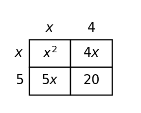

9.
Make a table and graph the quadratic $y=x^2-x-6$ on the blank coordinate plane. Use your graph to estimate the x-intercepts.

Use these problems to model data with exponential growth or decay and interpret the model. Focus on ratios, reasonableness, predictions, and limitations.
For each data set, decide whether it shows growth, decay, or neither.
| Day | 0 | 1 | 2 | 3 | 4 |
|---|---|---|---|---|---|
| A | 20 | 30 | 45 | 67.5 | 101.25 |
| B | 90 | 84 | 78 | 72 | 66 |
| C | 800 | 560 | 392 | 274.4 | 192.08 |
Use the data to estimate the ratio from one time step to the next.
| Month | 0 | 1 | 2 | 3 |
|---|---|---|---|---|
| Downloads | 200 | 260 | 338 | 439 |
A new car costs $\$31,000$ and loses 15% of its value each year.
A city population was 18,000 in 2020 and is growing by about 3% per year. Write a model using t years after 2020, then predict the population in 2028.
Complete the sentence: A zero of a function is an input value that makes the output equal to ______.
Match each factor to its x-intercept.
| Factor | $x-5$ | $x+2$ | $x+9$ |
|---|---|---|---|
| x-intercept | _____ | _____ | _____ |
For $f(x)=x^2-6x+5$, write factored form and vertex form. Then identify the zeros, vertex, and y-intercept.
For $f(x)=-(x+2)^2+3$, identify the vertex and maximum value, then explain why vertex form makes those features direct.
Make a table and graph the quadratic $y=x^2-x-6$ on the blank coordinate plane. Use your graph to estimate the x-intercepts.
The expression $x^2+10x+25$ should be represented by a square area model, but the model shown is not a square. Locate the mismatch, explain how you know, and revise the model.

Factor $36x^2-49$ using the difference-of-squares pattern. Then factor it again by thinking of it as a product of conjugates. Compare the two explanations.
A student designed the area model shown to represent a product, but the model does not support the claimed expression $5m^2-12m-6$.
Revise either the expression or one part of the model so the representations match. Then write the matching product and sum.

Set up, but do not simplify, the formula for $2x^2-7x+3=0$.
Classify the roots of $x^2+4x+8=0$ as rational, irrational, or nonreal.
Solve or interpret the quadratic situation for Quadratic Formula. Show the algebra that supports your answer.
Use the quadratic formula to solve $x^2-3x-5=0$ exactly.
Reasonableness/Estimation Argument. Analyze the quadratic evidence for Quadratic Modeling and Optimization. Write a conclusion and justify it with algebraic or graphical evidence.
A model gives solutions $t=-0.2$ and $t=3.4$ seconds. Decide which solution(s) are meaningful and justify using the context and the equation form.
A data set begins 50, 75, 112.5, 168.75. Is an exponential model reasonable? State the ratio.
A model is $y=120(0.85)^x$. Interpret the starting value and multiplier.
A linear model and an exponential model both start at 10. Which one eventually grows faster if the exponential multiplier is greater than 1?
Find the zeros of $y=(x-2)(x+5)$.